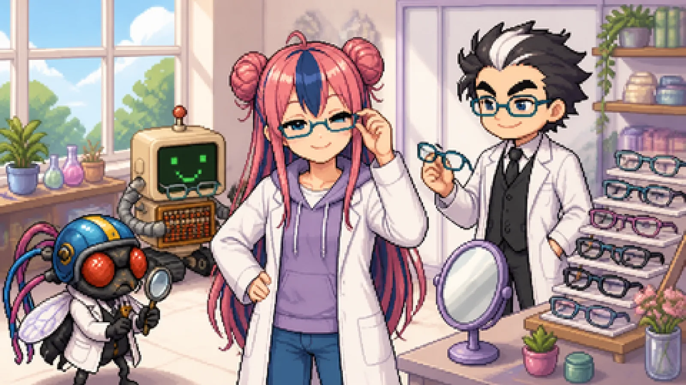
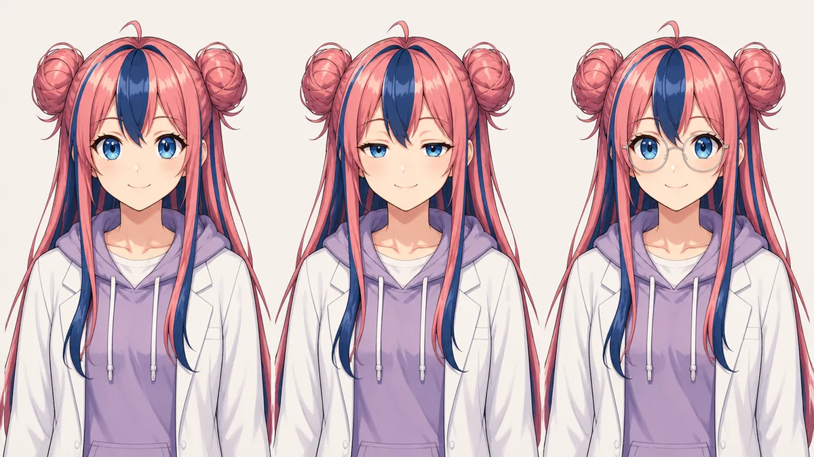
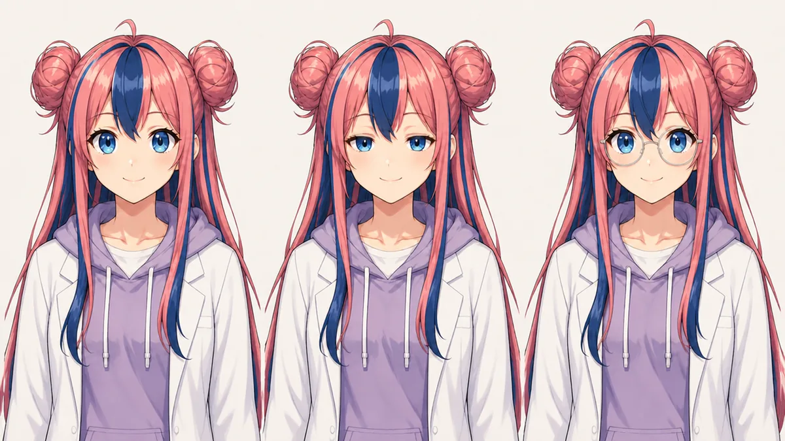
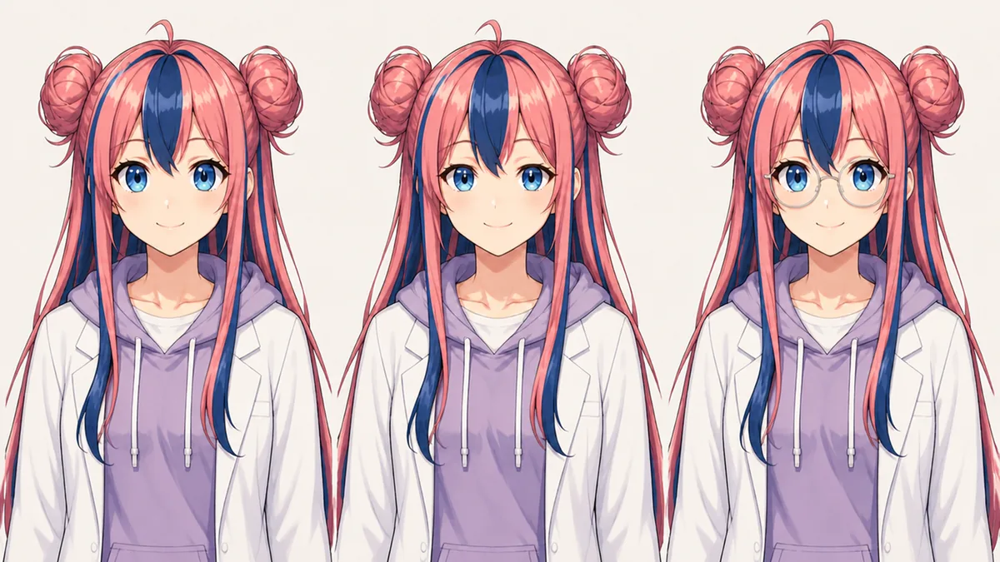
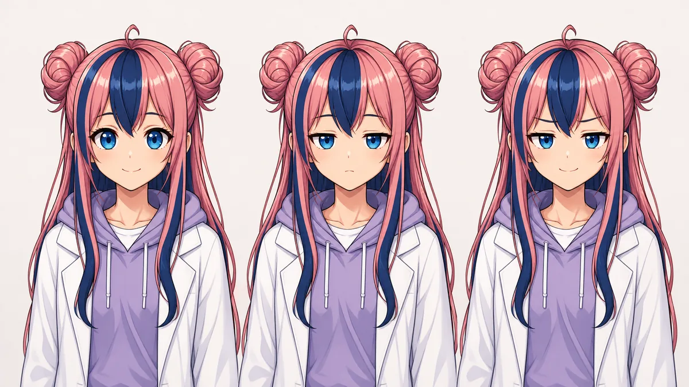
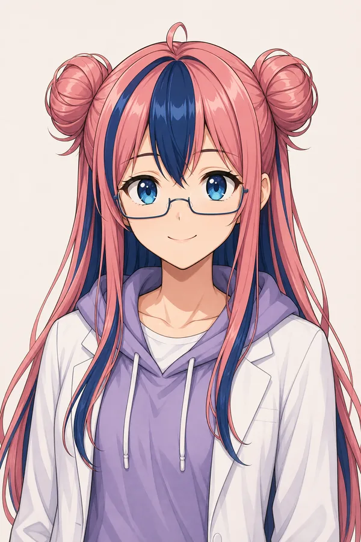

오늘의 과제

박사오늘은 바꿔 보는 날이다. 하루, 눈을 반쯤 감아 볼래? 안경도 써 보고.

주판봇표정이 바뀌면 얼굴을 처음부터 다시 그리겠습니다!

초파리 연구원그러면 매번 다른 사람이 돼. 기본 얼굴은 그대로 두고 한 곳만 바꾸자.

조수 하루안경 쓰면 제 눈이 가려질까 봐 걱정이에요…

모델은 하루, 손님 모델은 박사입니다. 기본 얼굴이 서면 바꾸는 것도 쉽습니다. 주판봇은 바꿀 때마다 얼굴을 처음부터 다시 그리고, 초파리는 기본 얼굴에서 한 곳만 바꿉니다.
그림 실력·코드·수식을 몰라도 됩니다. 실험을 눌러 보며 따라오세요.
위 눈꺼풀을 평평하게 내리고 원래 자리에 연한 선을 남기면 반쯤 감은 눈이 됩니다. 눈썹을 올리면 대담한 인상이 더해집니다
졸릴 때 거울을 보면 눈동자는 그대로인데 눈꺼풀만 내려와 있습니다.
표정 시트는 기본 얼굴 위에 눈꺼풀·눈썹·입만 바꾼 레이어를 겹쳐 만듭니다. 그래야 컷마다 얼굴이 흔들리지 않습니다.


위 눈꺼풀을 30~50% 내리면 반쯤 감은 눈이 됩니다. 눈의 크기와 자리는 바꾸지 않습니다.
눈썹을 함께 올리면 대담한 인상, 그대로 두면 나른하거나 시큰둥한 인상이 됩니다.
원래 눈꺼풀 자리에 연한 선을 남겨 두면 덮인 눈으로 읽힙니다.

AI에게 '반쯤 감은 눈'을 요청했더니 눈이 작아지고 얼굴형까지 바뀌었습니다. 어떻게 할까요?
기본 얼굴 그림을 첨부하고 'Same face. Change only: lower the upper eyelids to half; keep eye size and position'처럼 한 곳만 바꾸라고 적습니다. 얼굴이 흔들리면 눈 부분만 부분 수정으로 고칩니다.
애니풍 여성 얼굴은 눈이 크고 귀가 낮아 테가 눈에 걸리기 쉽습니다. 림(렌즈 테)을 크게 하거나 아래 테만 있는 안경을 씁니다
사진을 찍을 때 안경 테가 눈에 걸리면 고개를 살짝 들거나 안경을 조금 내립니다.
남성 캐릭터는 눈이 크지 않고 귀가 높아 테가 눈을 가리기 어렵습니다. 그래서 테 전체가 있는 안경이나 작은 렌즈 안경도 잘 어울리고, 아래에서 올려다보는 각도에서도 눈이 보여 고를 수 있는 각도가 많습니다.
림 높이를 눈 높이의 1.4배 이상으로 키우면 테가 눈동자를 가로지르지도, 눈에 바짝 붙지도 않습니다(이 실험의 예시).
언더림은 위 테가 없어 눈매를 그대로 보여 줍니다.
옆얼굴에서는 안경다리를 눈 앞에서 끊거나, 눈이 보이는 각도를 고릅니다.
AI가 안경 쓴 여성 캐릭터를 그렸는데 테가 눈동자 한가운데를 지납니다. 고칠까요?
눈이 가려지면 표정이 사라집니다. 'large rectangular rims that do not cross the eyes' 또는 'under-rim glasses (no top frame)'를 넣어 다시 요청하세요.
얼굴이 정면이어도 어깨를 조금 기울이고 몸을 살짝 비틀면 굳은 느낌이 사라집니다
서서 이야기할 때 사람은 한쪽 다리에 무게를 싣고 어깨가 조금 기울어 있습니다.
인물 소개 컷은 얼굴을 정면에 가깝게 두고 몸을 3/4쯤 돌리는 경우가 많습니다. 정면 얼굴도 아주 조금만 비스듬히 하면(한쪽 볼을 살짝 부풀리고 눈을 조금 흘기면) 부드러워집니다.
어깨를 5~8° 기울이고 몸을 조금 비틀면 굳은 느낌이 줄어듭니다.
비틀기가 너무 크면 얼굴과 몸이 따로 놀아 보입니다.
딱딱함 지수는 원리를 보이려고 만든 예시 계산입니다. 실제로는 눈으로 확인합니다.
AI가 그린 인물 소개 그림이 좌우 대칭의 증명사진 같습니다. 어떻게 요청할까요?
'face looking at the viewer, shoulders slightly tilted, body turned a little'처럼 얼굴과 몸의 방향을 따로 적습니다.
머리 크기 원을 그려 뒤통수가 부풀었는지 보고, 턱이 튀어나와 보이면 턱을 당기거나 크게 들게 합니다
사진 속 옆모습이 어색할 때 턱을 살짝 당기면 목선이 정리됩니다.
목을 가늘게 줄인 애니풍 캐릭터는 아주 작은 비율 차이로 턱이 튀어나와 보입니다. 턱을 당기면 턱이 덜 보이고 뒤통수도 매끈해 보입니다.
뒤통수가 머리 크기 원 밖으로 나오면 머리가 무겁고 둔해 보입니다. 원에 맞춰 깎습니다.
목이 가는 그림에서 턱이 튀어나와 보이면 턱을 당기거나(−8° 이하) 크게 들게(10° 이상) 합니다.
점검은 큰 것부터: 머리 크기 → 턱 방향 → 눈·코 순서입니다.
AI 옆얼굴이 둔하고 머리가 커 보입니다. 원인을 어디서 찾을까요?
그림 위에 앞머리를 따라 머리 크기 원을 대 보세요. 뒤통수가 밖으로 나왔으면 'compact back of the head'를 넣거나 뒤통수만 부분 수정합니다.
이 부에서 배운 원리를 그림 생성 AI(Genspark 등)로 직접 확인합니다. A는 이 페이지 그림을 실제로 만든 프롬프트, B는 원리를 하나 빼거나 바꾼 비교용 문장입니다.
참고 그림 내려받기: haru_anime_base · sia_anime_base · moa_anime_base · haru_sheet · sia_sheet · moa_sheet · doctor_sheet · fruitfly_sprites_6 · jupanbot_ref_genspark_v0 · pixel_style_ref_prev_cover
기본 얼굴에서 눈꺼풀만, 안경만 바꿔도 같은 하루로 보이는지 봅니다.
첨부: refs/sia_anime_base.png, refs/haru_anime_base.png, refs/moa_anime_base.png, refs/doctor_sheet.png
Illustration, wide 16:9. Art style: high-quality anime illustration, clean confident lineart, two-tone cel shading, natural adult proportions. Match the attached reference images exactly (face, hair, colors, accessories). All characters are adults in their twenties (the Professor is an adult man in his thirties); modest outfits exactly as described. Three front-view chest-up portraits of the same adult woman Haru (adult lab assistant, long straight pink hair with navy streaks and a thick navy streak down the center of the bangs, two round hair buns on top, small ahoge, big blue eyes), wearing lavender hoodie with white drawstrings over a white t-shirt, open white knee-length lab coat in a row: 1) neutral face; 2) only the upper eyelids lowered to half (a cool half-lidded look), eye size and position unchanged; 3) wearing large under-rim glasses (no top frame) whose lower frame stays below the eyes. Everything except the eyelids and glasses is identical across the three. Light from the upper left. Plain off-white studio background. No text, no letters, no numbers, no logos, no watermark, no revealing clothing, not childlike, no school uniform, not resembling any famous anime character.
Same image, keep the same framing. Change only: in the middle panel make the eyes smaller and narrower instead of lowering the eyelids. Still no text.

실제 결과: B에서 가운데 얼굴의 눈은 A와 거의 같았습니다. 또 A의 안경은 언더림이 아니라 가는 둥근 테로 나왔지만, 테가 눈 바깥을 둘러 눈동자를 가리지는 않았습니다.
작은 테로 바꾸면 눈이 가려지는지 같은 그림에서 비교합니다.
첨부: refs/sia_anime_base.png, refs/haru_anime_base.png, refs/moa_anime_base.png, refs/doctor_sheet.png
Illustration, wide 16:9. Art style: high-quality anime illustration, clean confident lineart, two-tone cel shading, natural adult proportions. Match the attached reference images exactly (face, hair, colors, accessories). All characters are adults in their twenties (the Professor is an adult man in his thirties); modest outfits exactly as described. Three front-view chest-up portraits of the same adult woman Haru (adult lab assistant, long straight pink hair with navy streaks and a thick navy streak down the center of the bangs, two round hair buns on top, small ahoge, big blue eyes), wearing lavender hoodie with white drawstrings over a white t-shirt, open white knee-length lab coat in a row: 1) neutral face; 2) only the upper eyelids lowered to half (a cool half-lidded look), eye size and position unchanged; 3) wearing large under-rim glasses (no top frame) whose lower frame stays below the eyes. Everything except the eyelids and glasses is identical across the three. Light from the upper left. Plain off-white studio background. No text, no letters, no numbers, no logos, no watermark, no revealing clothing, not childlike, no school uniform, not resembling any famous anime character.
Same image, keep the same framing. Change only: in the third panel use small thin full-rim glasses whose frame crosses the middle of the irises. Still no text.

실제 결과: B2에서도 A와 비슷한 둥근 테가 나와 눈을 가리지 않았습니다. 6부 f7과 마찬가지로 이 실패는 도구가 고쳐 그려 재현되지 않았습니다. 테가 눈을 가리는 모습은 4부 2단계 실험에서 확인하세요.
이 부의 원리를 내 손으로 프롬프트에 옮겨 보는 과제 두 개입니다. 과제마다 목표 → 순서 → 넣을 프롬프트 → 확인할 것 → 예상 결과 → 자주 생기는 문제 순서로 적었습니다. 예상 결과 그림은 아래 프롬프트로 실제로 만든 그림입니다. 요청과 다르게 나온 곳은 '실제 결과'에 그대로 적었습니다. 결과는 매번 조금씩 다르니, 그림이 똑같지 않아도 '확인할 것'이 맞으면 성공입니다.
목표하루의 같은 얼굴 세 개(기본 / 눈꺼풀 반쯤 내림 / 눈꺼풀 내림 + 눈썹 올림)를 한 장의 표정 시트로 만듭니다.
왜 이 연습인가실제로 받은 그림에서 '눈을 작게'라는 비교 요청은 거의 반영되지 않았습니다. 바꿀 곳을 '눈꺼풀'과 '눈썹'으로 좁혀 적으면, 눈 크기와 자리를 지킨 채 표정만 바뀝니다.
첨부할 참고 그림: refs/haru_anime_base.png, refs/haru_sheet.png — 참고 그림은 위 직접 만들어 보기에서 내려받을 수 있습니다.
Illustration, wide 16:9. Art style: high-quality anime illustration, clean confident lineart, two-tone cel shading, natural adult proportions. Match the attached reference images exactly (face, hair, colors, accessories). All characters are adults in their twenties (the Professor is an adult man in his thirties); modest outfits exactly as described. Expression sheet: three front-view head-and-shoulders portraits of the same adult woman Haru (adult lab assistant, long straight pink hair with navy streaks and a thick navy streak down the center of the bangs, two round hair buns on top, small ahoge, big blue eyes), wearing lavender hoodie with white drawstrings over a white t-shirt, open white knee-length lab coat in a row, identical size and position. 1) neutral face; 2) only the upper eyelids lowered to half, eyebrows unchanged — a sleepy, bored look; 3) upper eyelids lowered to half AND eyebrows raised at the outer ends with a small confident smile — a bold, self-assured look. The eye size and the eye positions are identical in all three; only the eyelids, eyebrows and mouth change. Light from the upper left. Plain off-white studio background. No text, no letters, no numbers, no logos, no watermark, no revealing clothing, not childlike, no school uniform, not resembling any famous anime character.

1차 시도 결과: 세 얼굴의 눈 자리와 크기가 같고, 가운데와 오른쪽은 눈꺼풀이 내려왔습니다. 다만 오른쪽 얼굴의 눈썹은 거의 올라가지 않아, 자신만만함은 입꼬리로만 조금 드러납니다. 눈썹을 바꾸려면 'eyebrows clearly raised at the outer ends'처럼 더 분명히 적습니다.
세 번째 얼굴의 눈썹이 거의 올라가지 않았습니다. 그 얼굴의 눈썹만 칠해 다시 그리고, '바깥 끝을 높이 올린 아치'로 분명히 적습니다.
방법: 부분 수정: d7_haru_sheet 그림에서 오른쪽(세 번째) 얼굴의 두 눈썹만 칠하기(앞머리에 가린 부분 포함, 눈꺼풀은 빼기)
Inside the painted area only: eyebrows clearly raised and arched high, the outer ends lifted noticeably — a bold, self-assured look. Keep the half-lowered eyelids, the eyes, the bangs and the other two faces unchanged. Do not change anything outside the painted area. All characters are adults. No text, no letters, no numbers, no logos.
성공 기준세 번째 얼굴의 눈썹이 가운데 얼굴보다 분명히 높으면 성공
| 문제 | 이렇게 고칩니다 |
|---|---|
| 세 얼굴의 각도·크기가 다르다 | 'identical size, position and head angle'을 덧붙입니다. |
| 가운데 얼굴이 눈을 감아 버린다 | 'eyes still open, irises half visible'을 덧붙입니다. |
| 머리 번이 사라진다 | 'two round hair buns on top, navy streak in the bangs'를 다시 적습니다. |
더 해 보기4부 1단계 실험의 눈꺼풀·눈썹 막대를 받은 그림의 세 얼굴에 맞춰 움직여 보세요.
목표'언더림(위 테가 없는 안경)'을 그림 도구가 알아듣는 말로 풀어 적어, 테가 눈을 가리지 않는 하루의 안경 얼굴을 받습니다.
왜 이 연습인가실제로 'under-rim glasses'라고만 적었을 때는 위 테가 있는 둥근 안경이 나왔습니다(4부 직접 만들기, 6부 f7). 낱말 하나에 기대지 말고 모양을 문장으로 풀어 써야 합니다.
첨부할 참고 그림: refs/haru_anime_base.png, refs/haru_sheet.png — 참고 그림은 위 직접 만들어 보기에서 내려받을 수 있습니다.
Illustration, vertical 2:3. Art style: high-quality anime illustration, clean confident lineart, two-tone cel shading, natural adult proportions. Match the attached reference images exactly (face, hair, colors, accessories). All characters are adults in their twenties (the Professor is an adult man in his thirties); modest outfits exactly as described. Front view, chest-up portrait of Haru (adult lab assistant, long straight pink hair with navy streaks and a thick navy streak down the center of the bangs, two round hair buns on top, small ahoge, big blue eyes), wearing lavender hoodie with white drawstrings over a white t-shirt, open white knee-length lab coat, smiling softly, wearing glasses. Glasses description (important): semi-rimless rectangular glasses; a thin dark-navy metal frame runs ONLY along the bottom edge of each lens; NO frame above the lenses; the lenses are wider and taller than her eyes; the bottom frame passes below the irises and never crosses the eyes; thin temples going back to the ears. Light from the upper left. Plain off-white studio background. No text, no letters, no numbers, no logos, no watermark, no revealing clothing, not childlike, no school uniform, not resembling any famous anime character.

1차 시도 결과: 위 테가 없는 모양을 문장으로 풀어 적었는데도 위 테가 있는 가는 네모 안경이 나왔습니다(언더림 실패). 테가 눈동자를 가리지는 않았습니다. 언더림이 꼭 필요하면 위 테만 칠해 부분 수정으로 지우는 방법이 더 확실합니다.
언더림을 문장으로 풀어 적어도 위 테가 생겼습니다. 새로 만들지 말고, 렌즈 위의 테만 칠해 지웁니다. 지울 곳이 작고 분명해서 가장 확실한 방법입니다.
방법: 부분 수정: d8_haru_underrim 그림에서 두 렌즈 위쪽 테(가는 띠)와 두 렌즈 사이 다리 위쪽만 칠하기
Inside the painted area only: remove the glasses frame here and show what is behind it — her eyebrows, skin and bangs. The lenses now have no frame on the top edge. Keep the bottom frame, the side temples and the eyes unchanged. Do not change anything outside the painted area. All characters are adults. No text, no letters, no numbers, no logos.
성공 기준렌즈 위쪽에 테가 없고, 아래 테가 눈동자 아래를 지나면 성공
| 문제 | 이렇게 고칩니다 |
|---|---|
| 여전히 위 테가 있다 | 'NO frame above the lenses'를 문장 맨 앞으로 옮기고, 'half-rim glasses with the rim on the bottom'도 함께 적습니다. |
| 안경이 얼굴보다 너무 크다 | 'the lenses slightly wider than her eyes'로 줄입니다. |
| 렌즈에 빛 반사가 많아 눈이 안 보인다 | 'clear lenses with no glare'를 덧붙입니다. |
더 해 보기4부 2단계 실험에서 언더림을 켜고 림 높이를 바꿔, 아래 테가 눈동자를 지나지 않는 범위를 찾아보세요.

| 항목 | 주판봇 | 초파리 |
|---|---|---|
| 닮음(하루다운가) | 4 | 9 |
| 원리(한 곳만 바꾸기·테 위치) | 3 | 8 |
| 자연스러움(자세·옆얼굴) | 4 | 8 |
| 합계 | 11 | 25 |


점수는 이야기 속 예시입니다. 실제 그림을 평가한 값이 아닙니다.
| 주제 | 한 줄 | 작업에서는 |
|---|---|---|
| 1단계 반쯤 감은 눈 | 눈꺼풀만 내리고 눈 크기·자리는 그대로 | 원래 눈꺼풀 자리에 연한 선 |
| 2단계 안경 | 림을 키우거나 언더림, 옆에서는 다리 끊기 | 테가 눈동자를 지나는지 보기 |
| 3단계 정면 자세 | 얼굴은 정면, 어깨 5~8° 기울이고 살짝 비틀기 | 얼굴과 몸 방향을 따로 정하기 |
| 4단계 옆얼굴 점검 | 머리 크기 원 → 턱 방향 → 눈·코 | 큰 것부터 점검 |

이 페이지에 나온 개념·방법·비유·쓰임을 모았습니다. 검색하고, "설명 보러 가기"로 본문에 돌아갑니다.
지식 색인을 출처와 함께 파일로 내려받습니다. 서지 관리는 BibTeX·RIS, 온톨로지 편집은 Turtle, 그래프 도구는 CSV, 여러 페이지 합치기는 kg.json입니다.